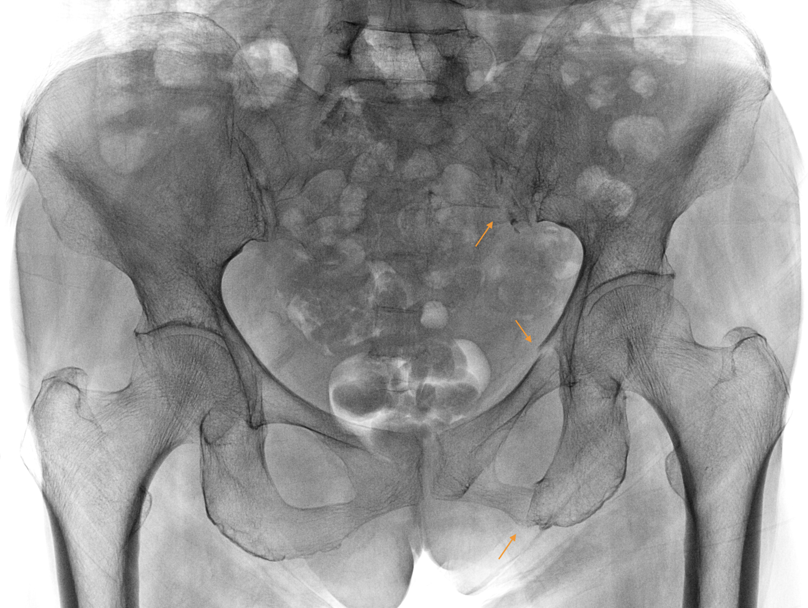
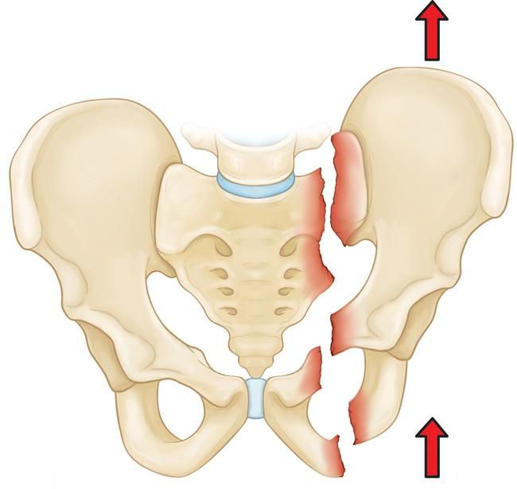

📊 Final Score & Response Chart
| Question | Option | Indicated? | Your Selection |
|---|
🧪 Investigations – Explanation
The xray pelvic shows # L superior & inferior pubic rami and L sacral ala. Vertical shear fracture should be considered.


CT Brain was not a necessary option since pateint report no head injury and her GCS was full.
CT Brain will be highly indicated if pateint presented with history of head injury, laceration over the head, reduced GCS, any neurological symptoms, amnesia, abnormal drowsiness, vomiting, seizures and etc.
Stroke can be another cause of fall. However, no acute stroke sign was noted in physical exam. CT Brain will be indicated to rule out any stroke related fall if potensital stroke was suspected.
Cardiac syncope, a type of fainting due to heart-related issues, significantly increases the risk of falls. Studies show that individuals experiencing syncope have a higher likelihood of falling compared to those without syncope.There is a positive association between most common cardiovascular disorders and falls in adults aged over 50 years.
Older adults are particularly susceptible to the effects of hyponatremia, as they are more likely to experience falls in general, and hyponatremia can exacerbate this risk.
In study of Boyer, S. et al 2019, The prevalence of mild hyponatremia was 13.2% (95% CI: 10.1–16.3%) in patients without falls and 26.1% (95% CI: 19.8–32.4%) in patients admitted for falls. Mild hyponatremia was significantly associated with falls (P < 0.001) and the adjusted odds ratio (OR) was 3.02 (95% CI: 1.84–4.96). The association between mild hyponatremia and falls remained significant after controlling for covariates.
Because mild hyponatremia might be a risk factor for injurious falls and ED admission, determination of sodium levels during basic biomarker assessment on ED admission could be an important component of fall prevention strategies for the elderly.
EEG was not considered indicated since the patient reported no preceding symptoms before the fall, making convulsion less likely. Convulsion should associated with other sign and symptoms, such as absent seizures, tonic seizures, tonic-chronic seizures, LOC, incontinence and etc.
💊 Management – Explanation
Not a good option due to multiple breaks in the pelvic ring. An unstable pelvic ring is considered when there are two or more fracture points. The management plan depends on the degree of instability, fracture displacement, and the patient’s activity demands.
Correct. Due to multiple breaks in the pelvic ring, surgical option maybe indicated.
This patient is suffering from moderate hyponatremia. Sodium replacement is needed and can be done orally or intravenously, depending on the degree of deficit.

Correct. Joint mobilization can often begin early but should be individualized. Even in a bed bound patient, exercises to avoid stiffness and promote muscle function are advisable.
Refrence:
Boyer, S., Gayot, C., Bimou, C. et al. Prevalence of mild hyponatremia and its association with falls in older adults admitted to an emergency geriatric medicine unit (the MUPA unit). BMC Geriatr 19, 265 (2019). https://doi.org/10.1186/s12877-019-1282-0
Bourke R, Doody P, Pérez S, Moloney D, Lipsitz LA, Kenny RA. Cardiovascular Disorders and Falls Among Older Adults: A Systematic Review and Meta-Analysis. J Gerontol A Biol Sci Med Sci. 2024 Feb 1;79(2):glad221. doi: 10.1093/gerona/glad221. PMID: 37738307; PMCID: PMC10809055.
For more infomaiton about Pelvic ring fracture:
https://orthoinfo.aaos.org/en/diseases--conditions/pelvic-fractures/
Case contributor: Mr Thomas Mak, Ms Gigi Cheung